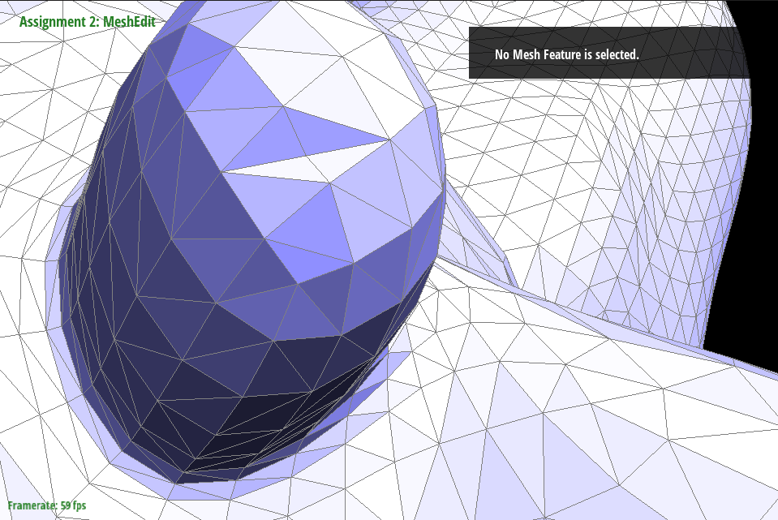

CS184/284A Spring 2025 Homework 2 Write-Up
Link to webpage: https://cal-cs184-student.github.io/hw-webpages-drsigma/hw2/index.html
Link to GitHub repository: https://github.com/cal-cs184-student/sp25-hw2-ty2.git
Overview
This homework is about mesh operations and data structures and it consists of two sections. Section 1 focuses on Bezier curves and surfaces, Section 2 focuses on mesh operations with half-edge data structure. I implemented operations like edge flip, edge split, and loop subdivision as a part of this homework, see sections below.Section I: Bezier Curves and Surfaces
Part 1: Bezier curves with 1D de Casteljau subdivision
For this part I implemented a 1-step subdivision according to the de Casteljau subdivision in the function called
BezierCurve::evaluateStep(). The function takes a list of \(n\) 2D points, and the output is a list of \(n-1\)
intermediate points interpolated using \( p_i' = (1-t)p_i + tp_{i+1}\) where \(i = 1, ..., n-1\). The implementation
of the function is simply first evaluating the input vector length \(n\), then constructing a ouptut vector of length
\(n-1\) where each element is filled in using the equation for \(p_i'\). This function is performed by toggling the
E button, as visualized below. After recursive subdivisions are performed until there is a single point, the
point lies on the Bezier curve with parameter \(t\). The effect of changing \(t\) is also visualized below.
|
|
|
Part 2: Bezier surfaces with separable 1D de Casteljau
This part of the assignment implements how smooth Bezier surfaces are evaluated. Bezier surfaces are defined
using a grid of control points, and interpolation is used to evaluate each point on the surface. In this assignment,
I first implemented the helper function evaluateStep() similar to the part above, except now the function
handles 3D points used on the surface. Another helper function, evaluate1D() executes the interpolation
recursively until only one point which lies on the bezier curve remains. Finally, the function evaluate()
takes in a grid of control points and the parameters \((u,v)\) to determine a point on the Bezier surface.
To determine the Bezier surface using a grid of control points, we first iterate through each row of control points
which represent control points for a curve that is parameterized by \(u\). By calling the helper function evaluate1D(),
an intermediate control point \(P_i\) results from each row of original control points. Finally, by calling the function again
on all intermeidate control points which describe a Bezier curve parameterized by \(v\), we arrive at a single point parameterized by
\((u,v)\) on the Bezier surface.
As a result, using a .bez file which includes the coordinates of the control points, one can
easily render meshes using the functions implemented, like the teapot example shown below.
Section II: Triangle Meshes and Half-Edge Data Structure
Part 3: Area-weighted vertex normals
In this section, I implemented the area-weighted normal calculation for a given vertex using the function
Vertex::normal(). This implementation takes advantage of the half-edge data structure. First,
we must traverse through each neighbouring face of the current vertex. Using the half-edge data structure, if h
is the half-edge originating fromt the current vertex, then h->twin()->next() is a half edge on the
next neighbouring face. Using this line repeatedly until we return to the original half-edge, we can traverse through
all the neighbouring faces exactly once. At each neighbouring face, we compute the normal and the area of that face. This
is done by first finding the location of the three vertices \(v_0,v_1,v_2\) of the triangle mesh in CCW order, then using
\(n = (v_1-v_0)\times(v_2-v0)\) and \(A=\frac{1}{2}||n||\) to compute the normal vector and the area, respectively. Finally,
we normalize the contribution of each normal vector from the neighbouring faces with their areas.
This implementation of area-weighted normal allows Phong shading to be applied, as seen in the example below.
|
|
|
Part 4: Edge flip
In order to perform the edge flip, many elements of the half-edge data structure need to have modified pointers
to other elements, while the total number of elements does not change. In order to implement the function HalfedgeMesh::flipEdge()
correctly, I followed closely the diagram from lecture below:
Following this diagram, there are a total of 6 inner half-edges, 4 vertices, 5 edges, and 2 faces in this operation. Notably the outer half-edges never change, so we do not need to consider them. Among these, after the edge flip 2 half-edges, 1 edge, and both triangles change their names, along with a lot of reassignment within all these elements. To avoid mistakes in my implementation, I named my variables exactly as indicated in this diagram. My implementation includes three main steps: 1) assign all elements to variables with the names on the right image, 2) rename the corresponding elements according to the left image, and 3) reassign all points in all the elements. As a result, no further debugging steps were needed.
The implemented edge flip is performed with the F key in the GUI. Below are a few example of edge flips.
|
|
|
|
|
|
|
|
|
Part 5: Edge split
I implemented edge split in this assignment, closely following the diagram from lecture again:
Once again, I name all the components in my code according to the names in this picture. Unlike edge flip, edge split requires mesh elements to be deleted and created. Specifically, we need to create 8 half-edges, 1 vertex, 4 edges and 4 new faces, while 2 half-edges, 1 edge, and the 2 original faces need to be deleted. I followed a similar coding process as the previous task, where I first assigned all original mesh elements to pointer variables, then I created the new elements. Next, I assigned everything for the mesh elements in the new mesh, and at the very end deleted the components that are no longer needed. While I caught a few errors caused by typos in my code, no further debugging was really needed. See the examples below that show the successful implementation of edge split.

|
|
|
|
|
|

|
|
|
|

|
Part 6: Loop subdivision for mesh upsampling
To implement the loop subdivision, I followed strictlyt the suggested steps: 1) compute positions of original vertices
according to (1 - n * u) * original_position + u * original_neighbor_position_sum where n is the degree of the
vertex and u is 3/16 if n is 3 and 3/(8n) otherwise; 2) compute positions of new vertices
in the mesh using 3/8 * (A + B) + 1/8 * (C + D) where A, B, C, D are positions of neighbouring original vertices;
3) split every mesh in the edge while keeping track of which edges are newly created; 4) flipping new edges which are connected to
one original vertex and one new vertex; 5) update vertex positions computed in steps 1 and 2. Since this part involves many steps,
I tested the function everytime I fished one of the steps to see if the result is expected.
Loop subdivision is effective in smoothing out the surfaces, but it also smoothes out features. This is very apparant in the cube example below. The way to prevent features from being smoothed out is to have many close-together mesh structures in the original mesh, like in the teapot example where the meshes are much finer near the cap or the opening of the pot.
The cube example looks asymetrical because we are using triangular meshes, which breaks the symetrical geometric property of the cube. By simply splitting the edges on every face of the cube to make the pattern on each face symetrical, we can eliminate this effect caused by subdivision.

|
|
|

|
|
|
|
|
|
|
|
|
|
|